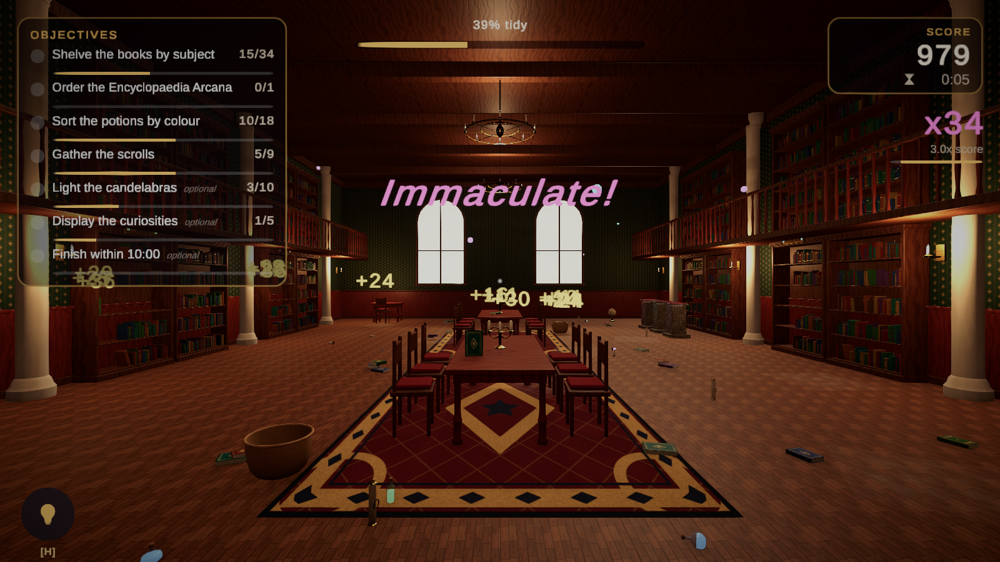
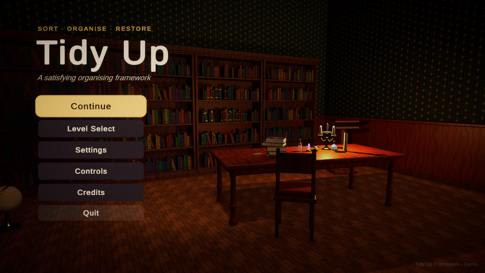
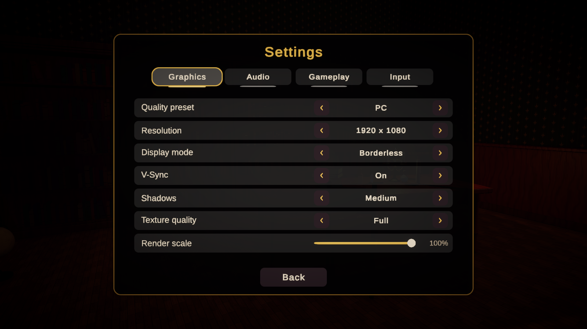
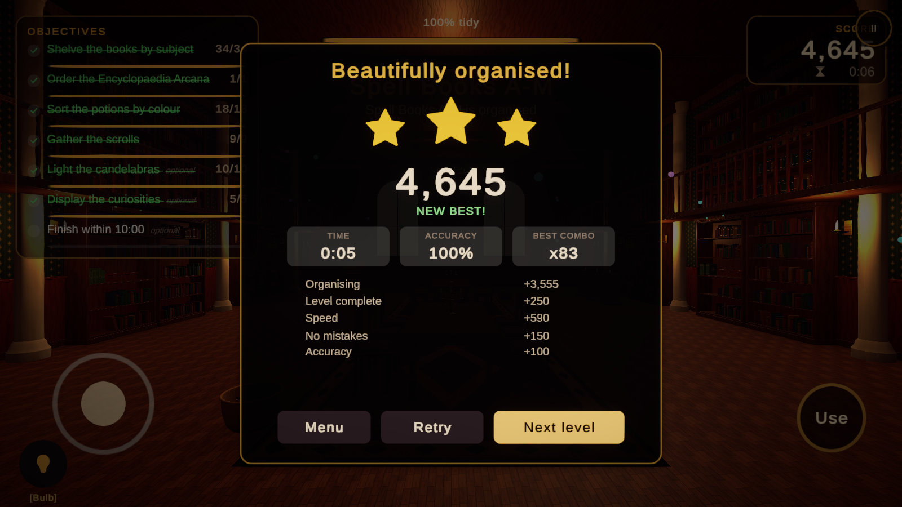
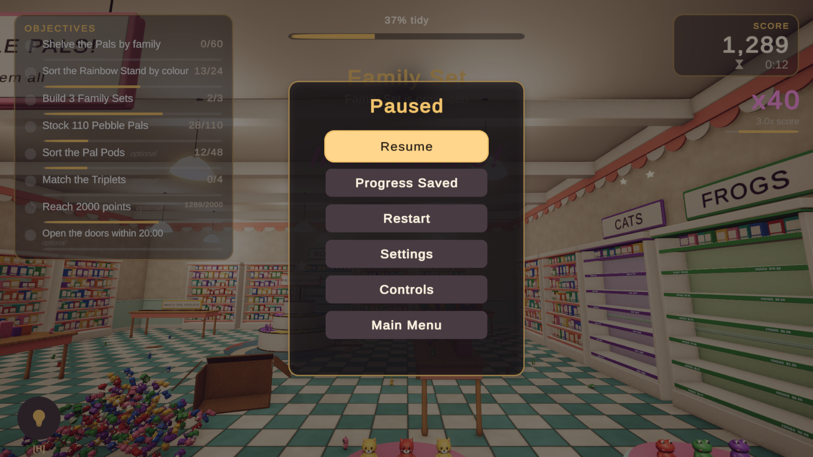
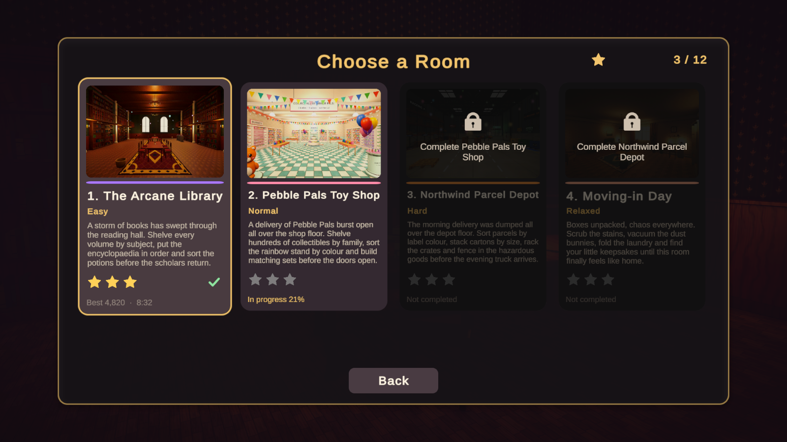
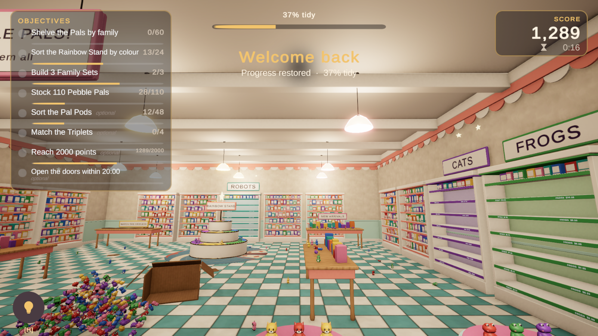

UI, Audio, Save & Settings
Presentation and persistence systems. Each view is a small component bound to framework events, so you can restyle or rebuild any screen freely.
UI system

Building blocks
| Component | Role |
|---|---|
TidyUIScreen | Any panel that shows and hides with fade, scale or slide transitions; selects a first element for gamepads; can lock gameplay channels while open. |
TidyScreenStack | Push/pop navigation with Escape and gamepad East as Back. |
TidyButtonFeedback | Hover/select scale, highlight visual, click and hover sounds. |
TidySafeArea | Fits a rect to Screen.safeArea. |
TidyPromptLabel | Device-aware input prompts in text. |
TidyLevelBoundView | Base class for views that bind to the level manager. |
HUD views
TidyObjectiveListView / TidyObjectiveItemView, TidyScoreView, TidyTimerView, TidyProgressView, TidyComboView, TidyInteractionPromptView (prompt, object name, crosshair), TidyFloatingScoreView, TidyHintButtonView, TidyBannerView, TidyInspectPanelView, TidyTutorialView.
Screens
TidyMainMenu, TidyLevelSelectView + TidyLevelCardView, TidyPauseMenu, TidyResultsScreen, TidyControlsView, settings rows (TidySettingControl) with TidyTabGroup, and mobile controls.


TidySettingControl with a key; changes apply and save immediately.
Audio system
A TidyAudioCue asset holds one or more clips, a channel (Sfx, Music, UI, Ambience), volume, random pitch range, spatial blend, looping and a cooldown that prevents stacking when many objects land at once. Play cues through TidyAudio.Play(cue) / TidyAudio.PlayAt(cue, position) or the ITidyAudioService. The service pools 16 sources, cross-fades music and ambience, and applies channel volumes either directly or through an AudioMixer if one is assigned in the framework settings (exposed parameters MasterVolume, SfxVolume, MusicVolume, UiVolume, AmbienceVolume).
The framework ships example cues and clips for pick up, place (wood, soft, glass), snap, correct chimes, gentle error, combo sparkles, objective and level fanfares, star pings, UI clicks and hovers, scrubbing and vacuum loops, plus demo ambience and music loops. All were synthesised for this package.
Save system
TidySaveService stores two documents: progress (level records with completion, stars, best score, best time, attempts; completed tutorials; reward balance) and settings. It implements ITidyProgressService, which is all gameplay code depends on.
| Storage | Location |
|---|---|
TidyJsonFileStorage (default) | Application.persistentDataPath/TidyUpSaves/*.json, written atomically through a temporary file |
TidyPlayerPrefsStorage | PlayerPrefs keys with a prefix (WebGL friendly) |
To use a cloud or platform save, implement ITidySaveStorage (three methods) or replace ITidyProgressService entirely and register it in TidyServices. Mid-level snapshots use the same storage, so a custom storage saves them too.
Saving progress inside a level
Players can leave a half-tidied room and continue later exactly where they stopped. Every level saves a snapshot automatically and restores it the next time the level is opened.

What is saved
| Data | Details |
|---|---|
| Objects | State, target and order inside the target, exact pose, discovery and mistake flags. Objects being carried go back into the player's arms. |
| Cleaning | Remaining dirt of every cleanable surface; disposed clutter stays disposed. |
| Level | Score, elapsed time, correct placements, mistakes, hints used, cleaned surfaces, best combo, completion percentage. |
| Player | Position, yaw and pitch. |
When it is saved
- Every Autosave Interval seconds while something changed (Level Manager, default 30 s; 0 disables the timer).
- When the game is paused, when the application is paused or quit, and before any scene change, for example returning to the main menu.
- When the player presses Save Progress or code calls
TidyLevelManager.SaveProgress().
The snapshot is deleted when the level is completed or failed and when the player restarts it.
Continuing


Setup for your own levels
- Keep Save Progress enabled on the
TidyLevelManager(it is on by default). - Give every
TidyObjecta unique id with Tidy Up Framework > Generate Missing Scene IDs. The level validator warns about duplicates. Without ids the framework falls back to object names plus an index, which only works while the scene does not change. - Give every target and cleanable a unique id (already required by objectives).
Scripting
var level = TidyServices.Get<TidyLevelManager>();
level.SaveProgress(); // returns false while not playing
level.DiscardSavedProgress(); // deletes the snapshot
level.ProgressSaved += snapshot => Debug.Log("Saved at " + snapshot.SavedAtUtc);
level.ProgressRestored += snapshot => Debug.Log("Restored " + snapshot.Progress);
var save = TidyFramework.Save;
save.HasLevelSnapshot("toy_store");
save.GetSavedProgress("toy_store"); // 0..1
save.FindMostRecentSnapshotLevel();Snapshots are stored as level_<LevelId>.json next to progress.json. TidyLevelSnapshot carries a version number for future migrations.
Settings
| Group | Settings |
|---|---|
| Graphics | Quality preset, resolution, display mode (exclusive, borderless, maximised, windowed), V-Sync, shadows (off–high, mapped to URP shadow distance and cascades), texture quality (mip limit), render scale |
| Audio | Master, music, effects, ambience |
| Gameplay | Hints, tutorials, placement preview, head bob, interaction assist |
| Input | Input method (automatic or forced), camera sensitivity, invert look |
Defaults come from TidyUpFrameworkSettings. TidySettingsService applies them at start-up and after every scene load.
Framework settings asset
Resources/TidyUpFrameworkSettings holds the level catalog, save storage type and folder, default player settings, optional audio mixer and groups, UI sound cues, menu music, input prompt definition and scene fade colour and duration.